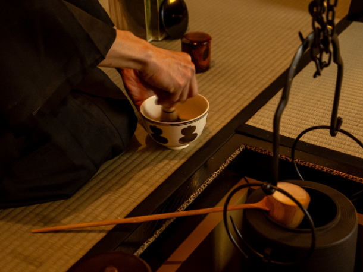
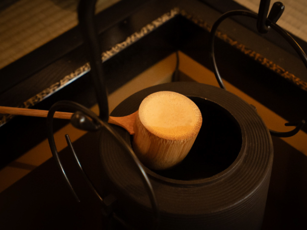
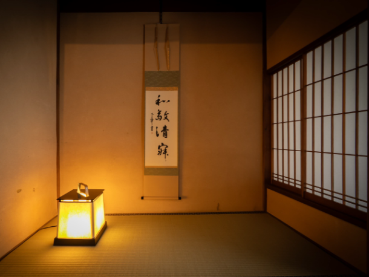
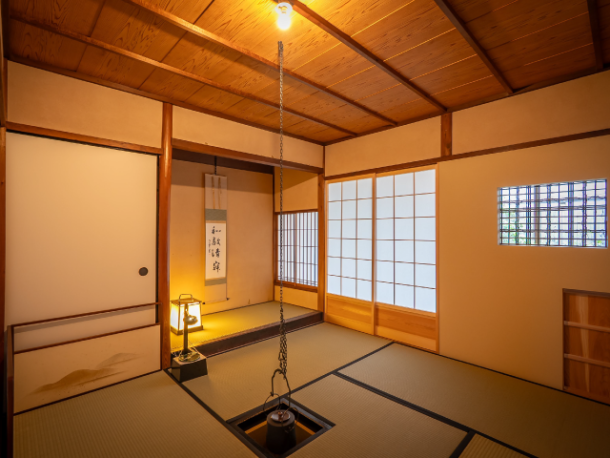
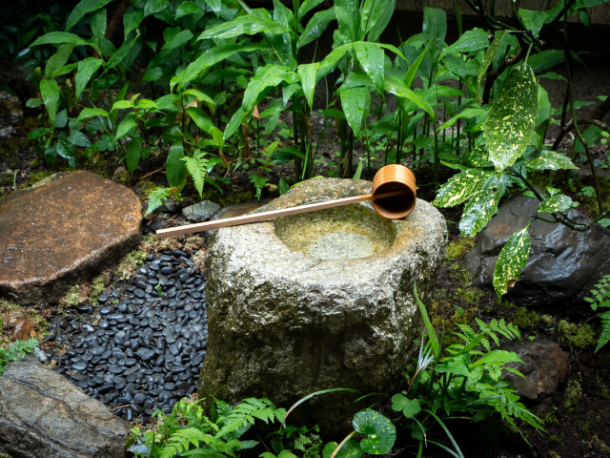

最新の情報は 公式サイトのツアーページ をご覧ください。
自分で点てるから、もっと思い出に残る。京町屋 茶道体験ツアー
| 2～3名で催行 | 15,800円／人 |
| 4～6名で催行 | 13,800円／人 |
※税込／大人・子ども同額
※1名様からご予約いただけますが2名様以上で運行します。
※人数により旅行代金が変動いたしますので予めご了承ください。
※TOP写真はイメージです
オプション
| 着付け体験 | +4,400円 |
※オプション（着付け体験）選択時は、②10:30発・③13:30発・④15:30発のプランのみ選択可能です。
※オプション付きの場合、集合・解散が通常と異なる時間になりますのでご注意ください。
（詳細は行程下へ）
京都のお茶文化を、ただ「見る・味わう」だけではなく、自分自身でお茶を点てて楽しむ特別な体験はいかがですか？
本ツアーは少人数制のプライベート感たっぷりのツアーとなっております。
ご家族やご友人同士など、気兼ねなくゆったりとした時間をお楽しみください。
さらに、移動はMKのタクシーでDoor to Doorの送迎。
目的地まで乗り換えや道順を気にする必要がなく、快適に移動できます。
一般的な茶道体験では、先生が点てたお茶をいただくスタイルが多いですが、このツアーでは、自分で茶筅を使ってお茶を点てることができるのが大きな魅力です。
いつもの京都観光とはひと味違う、特別な「お茶の時間」をお楽しみください。

| 🍵こんな方におすすめ！ |
| ・京都で特別な体験をしてみたい方 ・茶道や日本茶に興味がある方 ・自分でお茶を点ててみたい方 ・家族や友人だけでゆっくり楽しみたい方 ・大人数の団体ツアーではなく、プライベートに楽しみたい方 ・移動も含めて快適な京都観光を楽しみたい方 ・海外からのお客様への日本文化体験をお探しの方 |
行程
| 時間 | 場所 |
| ①08:30 | 京都駅八条口MKタクシーのりば |
| ①09:00 | Seasonal Harmony Kyoto |
| ①10:30 | 京都駅 |
※渋滞等で、予定通りの滞在時間をお取りすることができない場合がございます。予めご了承ください。
※オプション（着付け体験）選択時は、②10:30発・③13:30発・④15:30発のプランのみ選択可能です。
※オプション（着付け体験）を選択された場合、集合時間が通常よりそれぞれ45分ずつ前倒しになります。
※オプション（着付け体験）を選択の場合は、着物返却のためさらに解散時間が15分程度後ろ倒しとなります。




【MKトラベルLINE公式アカウント】
MKトラベルの新規ツアー情報をLINEでお届けいたします

【各SNSでも京都の情報やツアー情報をお届けしています】


旅行条件
| ツアー番号 | T282MK |
| 出発地 | 京都市内 |
| 添乗員／ガイド | 添乗員：なし |
| 食事 | なし |
| 最少催行人数 | 2名 |
お申込みについてのご注意
※最少催行人数は2名様です。最少催行人員に満たない場合は、旅行の実施を取りやめることがあります。出発の3日前にその旨をご連絡し、お客様から当社がお預かりしている旅行費用の全額をお返しいたします。
※旅行条件・旅行代金は、2026年9月1日現在を基準としています。
※行程および帰着時間は交通事情などにより変更になる場合があります。
※お申込みの前に弊社の募集型企画旅行規約をご確認ください。
よくある質問
Q.茶道体験施設について、もっと知りたいです。
A.京都市伏見区の「Seasonal Harmony Kyoto（シズハモ）」様にて茶道を体験していただきます。建物自体が京都市指定重要京町家で、初心者の方でも本格的な茶道を体験することができます。より詳しい施設の説明は公式ホームページをご確認ください。
Q.1名ですが、申し込みできますか？
A.はい。お一人参加の方もたくさんいらっしゃいますので、お気軽にお申し込みください。
Q.参加したかったけど、終了していました／日程が合いません
A.貸切で再現できる場合もございますのでご相談ください。お問合せフォームはこちら
＜お問合せフォームはこちら▶＞
＜MKトラベルTOPはこちら▶＞
＜おすすめツアー一覧はこちら▶＞
お支払い方法
【お電話・ご来店でのご予約の場合】
・クレジットカード決済【WEBシステムよりご予約の場合】
・クレジットカード決済
お支払方法詳細はこちら
お客様のご都合でご予約をキャンセルされる場合は、すみやかに下記お問合せ先までご連絡ください。
キャンセル料
11日目に当たる日以前
無料
10日目に当たる日以降
20%
7日目に当たる日以降
30%
旅行開始日の前日
40%
旅行開始日の当日
50%
旅行開始後又は無連絡
100%